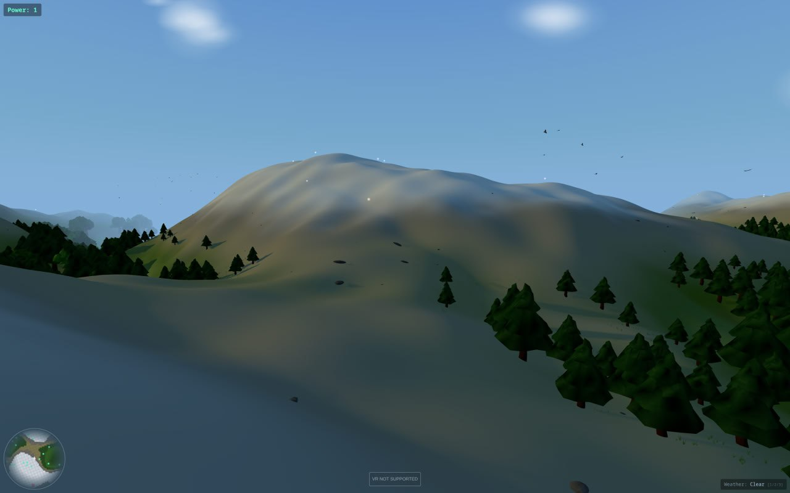
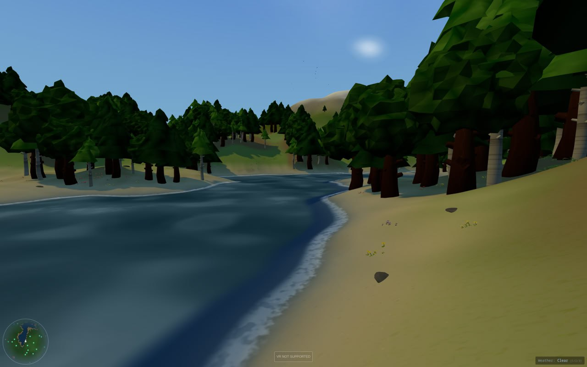
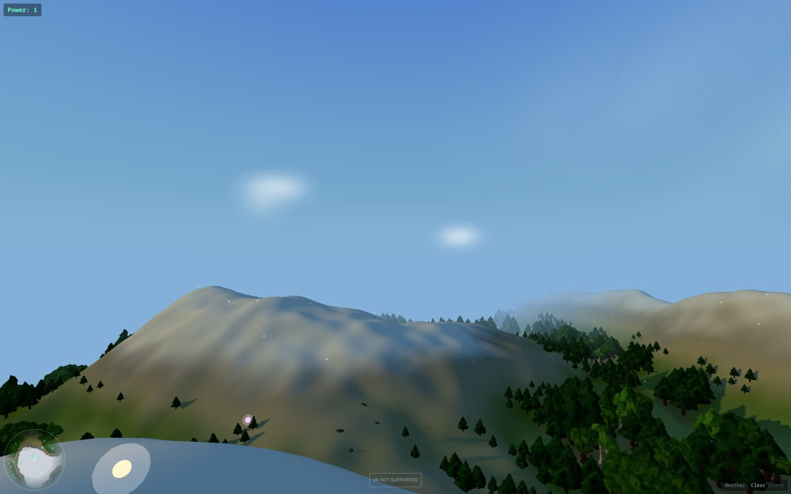
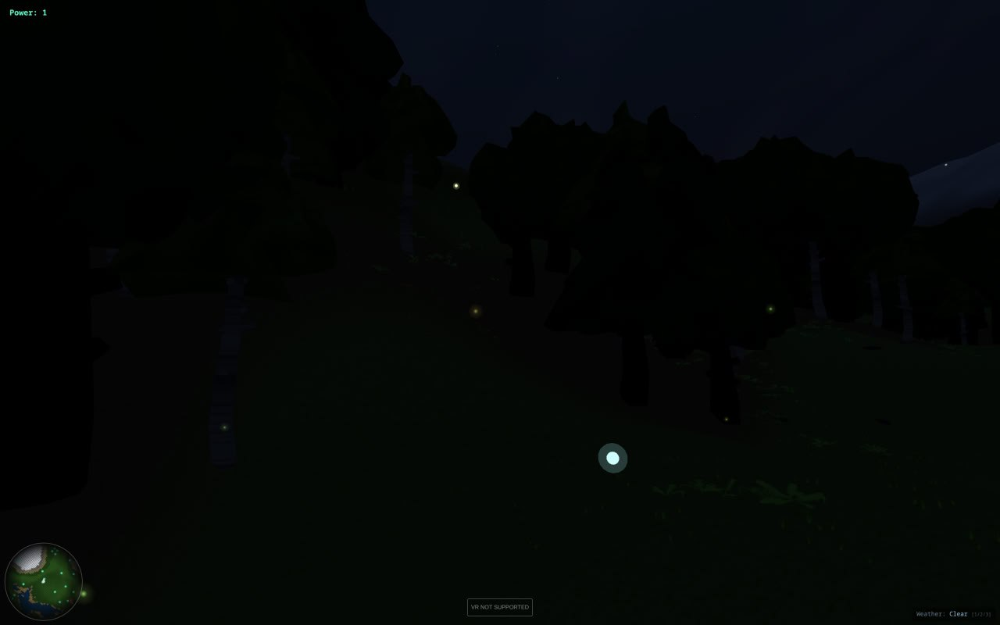
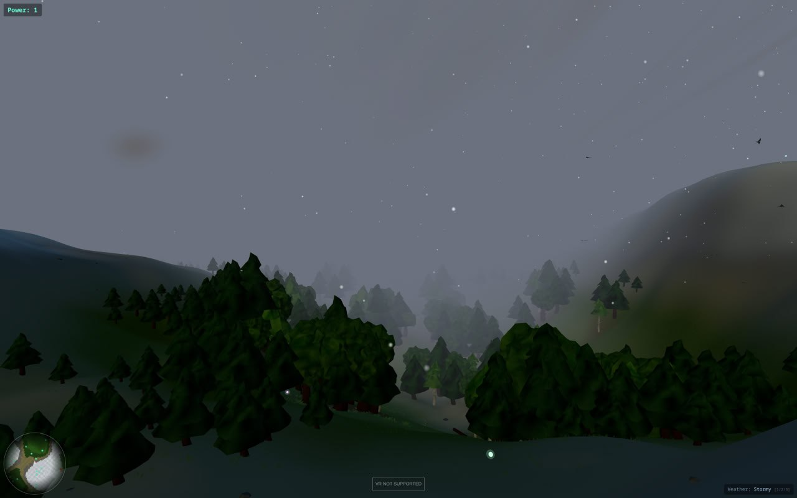
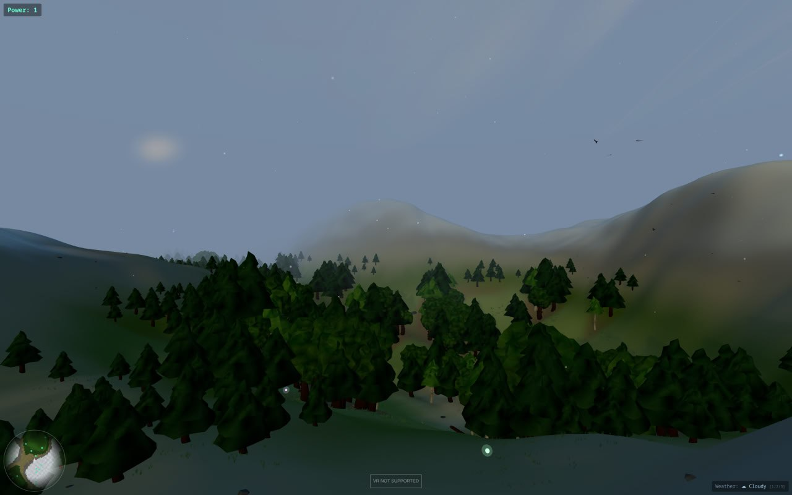
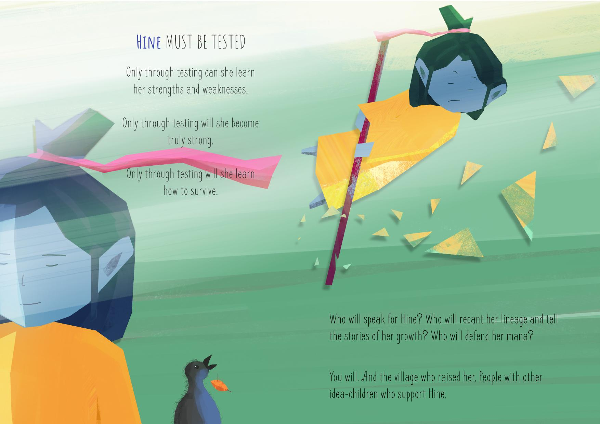

Building a VR Forest
Growing strong ideas (and code) through specs, not programming
…or, what I did at the beach on my summer break
Dr Roy C. Davies · Auckland AR/VR Meetup · 25 Feb 2026
Kia ora everyone. I'm Roy — VR researcher and builder for 30-odd years,
writing software for 40+. I teach assistive tech at Auckland Uni and
supervise VR students at AcademyEX. Tonight: something I built at the beach
in 7 days using only AI, and the thinking behind it. Two parts, ten minutes.
Who Am I?
VR/XR researcher & builder — 30+ years
Technician & assistive tech lecturer (Auckland Uni)
Emerging tech & Masters supervisor (AcademyEX)
Tech consultant — "your technology friend"
CBM PET in the '70s, Dragon 32 in the '80s 🐉
First refutation: killing the Dragon by soldering on a live motherboard 💀
40+
years of building things
20+
programming languages
Quick background. Started building hardware in the 80s — modular robotics for
wheelchairs on a Dragon 32. PhD in Sweden. Built location-based AR games on
the first iPhone. Now I teach assistive tech at Auckland Uni and supervise VR
students at AcademyEX. The big number here is the zero — I'll explain that.
The First Prompt
"I want to create, from scratch, a VR simulation using just Claude Code.
The simulation should allow a wearer to explore an endless, randomly generated forest."
0
lines of hand-written code
WebXR + Three.js · No game engine · Static site · 7 days
One sentence. That's the starting prompt. Pure WebXR, no Unity, no Godot.
Just an AI and a conversation. Seven days. Zero lines of hand-written code.
Let me show you what came out.
What Emerged
Infinite procedural terrain
Trees, grass, ferns, rocks, flowers, stumps, fallen logs
Ponds, streams & mountain chains
Real day/night cycle from device GPS
438 real constellation stars
Dynamic weather — rain, snow, thunder
All audio procedurally synthesised
Rain shelters under tree canopy
Animals peek from behind trees, glowing eyes at night
Walk, run, swim, ski — context-aware movement
Collect power orbs to sprint
Quest 3 native via browser
~12,000 lines of JavaScript
Two external assets total: a morepork call and a moon photo. Everything else generated at runtime.
An infinite forest with real astronomy — the Southern Cross is in the right place,
the moon has tonight's actual phase. Weather systems, spatial audio, all procedural.
12,000 lines of JS from 13 conversations over 7 days. Two borrowed assets:
a morepork recording and a moon photograph. Everything else — every texture,
every sound, every mesh — generated at runtime.
Try It Right Now
reality2-roycdavies.github.io/vr-forest
Open in your Quest browser → tap "Enter VR"
If you have a headset, try this now. Static site on GitHub Pages.
WebXR — no app install, just open the browser. Desktop works too.
[PAUSE — let people try it]
The Forest






Mountains · Water · Night · Forest floor · Weather · Atmosphere — all procedural, all from one prompt
In case the live demo isn't working — here's what it looks like.
Mountains, rivers, day and night cycle, weather systems, forest floor detail.
All procedurally generated. All from that one starting prompt.
Human = Director,
🎯 VisionHuman
→
🏗️ BuildAI
→
🥽 TestHuman
→
🗣️ FeedbackHuman
"The first bear growl sounded more like someone farting."
AI generates. Humans curate. Only a human in a headset knows if it feels right.
I was the creative director. Put on headset, describe what's wrong, AI fixes it.
The bear growl really did sound like a fart — AI was happy with it, I wasn't.
We cut procedural leaf rustling entirely because it never sounded right.
Those are judgement calls. Human judgement calls. AI is incredibly powerful
but it has no taste.
The Messy Reality
13 sessions of "that's not right"
🔊 Sound
Bear growl → sounded like a fart
Footsteps → 5 complete rewrites
Leaf rustling → abandoned entirely
🌲 Nature
Ferns → "alien life forms" → "cactuses" → natural
Birds → wings backwards, then "pterodactyls"
Rain on water → looked like snow
🎨 Shaders
Water — 10+ wave equations, still iterating
Ground — terrain blending, shore foam, mud
Sky — ghost trees, black sky, fog all fighting
Texture phasing — blending naturally between biomes
Still not quite right in the headset ← this one
Every one of these was a conversation: "that's wrong" → iterate → "better" → iterate → "ship it"
It wasn't smooth. The bear growl sounded like a fart. Footsteps needed five
complete rewrites. Leaf rustling was attempted multiple times and cut entirely —
procedural foliage sound is genuinely hard. The ferns looked like alien life forms,
then cactuses, before looking like ferns. The birds had their wings on backwards
and were the size of pterodactyls. The sky went completely black when I increased
the draw distance. Every one of these was the same loop: that's wrong, iterate,
better, iterate, ship it. That's the process. It's messy. It works.
The Key Insight
Specs are the product. Code is a compilation step.
🌲 VR Forest: Build → Spec
Built organically through conversationExplore first, codify what you learn
📐 Reality2: Spec → Build
46 specs written from experienceKnow what you're building, then build it
Either way → the spec becomes the durable asset
Written using RFC 2119 requirement language (MUST, SHOULD, MAY).
If the AI can't build it from the spec alone, the spec has a gap — not the AI.
Here's the big idea. After building the forest, I wrote the spec — 3,000 lines
covering every parameter and every decision. Now the spec IS the product.
The code is disposable — regenerate it for any platform, any engine.
Platforms come and go. Quest today, Apple tomorrow. The spec survives all of them.
And here's the test: if an AI can't build it from the spec alone, the spec
has a gap. That's a feature — it tells you where your thinking is incomplete.
Growing Strong IdeasGrowing Strong Code
Part 2. I want to tell you a story.
The Story of Hine
An idea is like a child. Let's call her Hine. She started small. You protected her, helped her grow.
It takes a village. You shared Hine — whānau first, then wider.
But Hine must be tested. Each time she falls, you both learn. Each time, stronger.
Not all idea-children survive. You remember Hemi. But from Hemi came Hine.

Illustration: Priyan Jayamaha
An idea is like a child. You nurture her, protect her, share her carefully
with your whānau. But ideas need to face the world. You build obstacle courses.
She falls, you pick her up, go again. And some ideas don't survive — you remember
Hemi with fondness, but from Hemi came Hine. Anyone who's had an idea they loved
knows exactly what this feels like.
This Is the Story of Science
People think science is about facts and figures.It's not. Science is about people growing strong ideas.
Ideas gain strength by surviving attempts to break them .
Not by being "proven." Not by consensus. By surviving testing.what would prove this wrong?
The Story of Hine IS the story of science. Karl Popper called it
conjecture and refutation. Ideas gain strength by surviving serious
attempts to break them. Not by consensus, not by authority.
Apply it to software: your spec is Hine. Every test is an obstacle course.
Every bug is a fall she learns from. And anyone can do this — you don't need
a PhD. You just need intellectual honesty and the courage to ask:
what would prove this wrong?
A Spec Falls — And Gets Stronger
Real example from Reality2
📝 Spec: "How two devices discover each other over Bluetooth."
🏗️ Built it. Two devices, following the spec exactly.
🤷 Nothing. Couldn't see each other. No error. Just… silence.
🔍 Why: The Bluetooth library auto-wraps the message.
Double-wrapped — like a letter in two envelopes. Address hidden inside.
🔧 The code was correct. The spec was wrong. So we fixed the spec.
Real example. Two devices, same code, following the spec perfectly. Silence.
The spec described the complete raw message, but the Bluetooth library wraps it
automatically. Double-wrapped — like a letter in two envelopes. The code did
exactly what the spec said. The SPEC was wrong. Hine fell. We picked her up,
fixed the spec, added a warning for future implementers. She's stronger now.
Honest Confidence
Know what you trust — and what you don't
VR Forest Terrain — you just walked around in it
Bluetooth Discovery — failed, spec fixed, getting stronger
Trust & Security — reviewed but never built
Green = survived testing
Yellow = learning
Red = untested
Most projects don't tell you which parts they trust. We think they should.
We track this in a dashboard. Each spec earns confidence by surviving tests.
Green — survived serious refutation. You walked through it on your headsets.
Yellow — been tested, been broken, getting stronger. Red — not yet tested,
and we're honest about that. Most software projects don't tell you which parts
they trust and which they don't. We think that honesty is more valuable than
false certainty.
Five Ideas to Take Home
1
AI builds. You direct.
— The creative vision is still yours.
2
Write the spec, not the code.
— Your spec is Hine. Code is ephemeral.
3
Build obstacle courses for your ideas.
— Each fall makes them stronger.
4
Anyone can do this.
— Just ask: what would prove this wrong?
5
Be honest about what you know.
— Honest confidence beats false certainty.
And the forest of ideas grows. 🌲
Five things. One: AI is the studio, you're the director. Two: invest in specs,
not code — they're your Hine. Three: test your ideas seriously — every fall
makes them stronger. Four: anyone can do this, it's just structured honesty.
Five: be transparent about confidence — say what you know and what you don't.
And the forest of ideas grows — that's from the Hine story,
and you just walked through a literal forest of ideas on your headsets.
Links & Questions
Questions? 🤔
This slide deck was also made by AI. From a spec, obviously. 😊
Dr Roy C. Davies · Auckland AR/VR Meetup · 25 February 2026
Links. The VR Forest is live — try it on your headsets. The repo has everything
including the full conversation transcripts if you want to see how a human-AI
development conversation actually works. Questions?